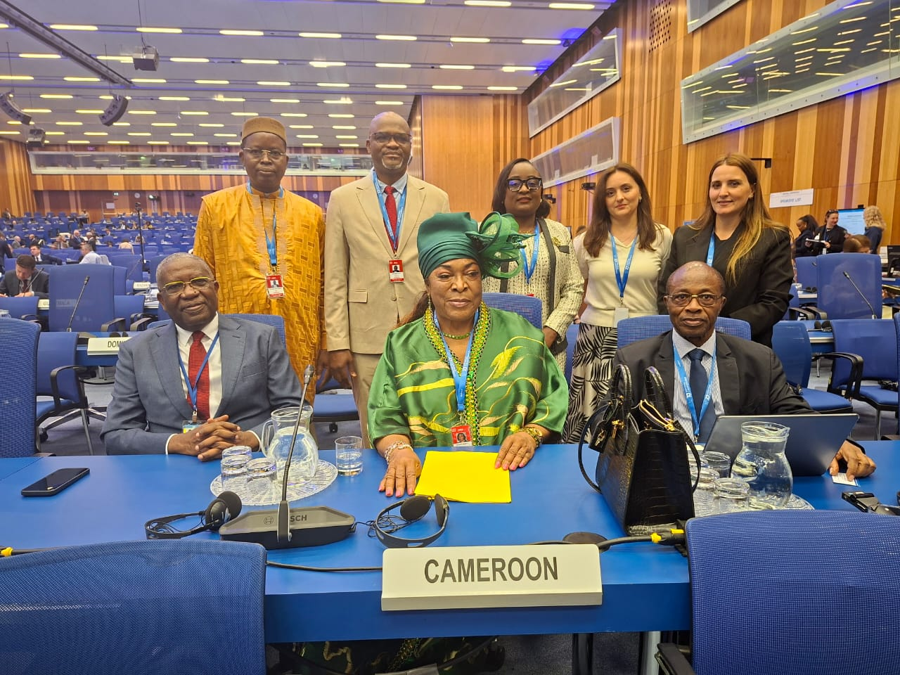
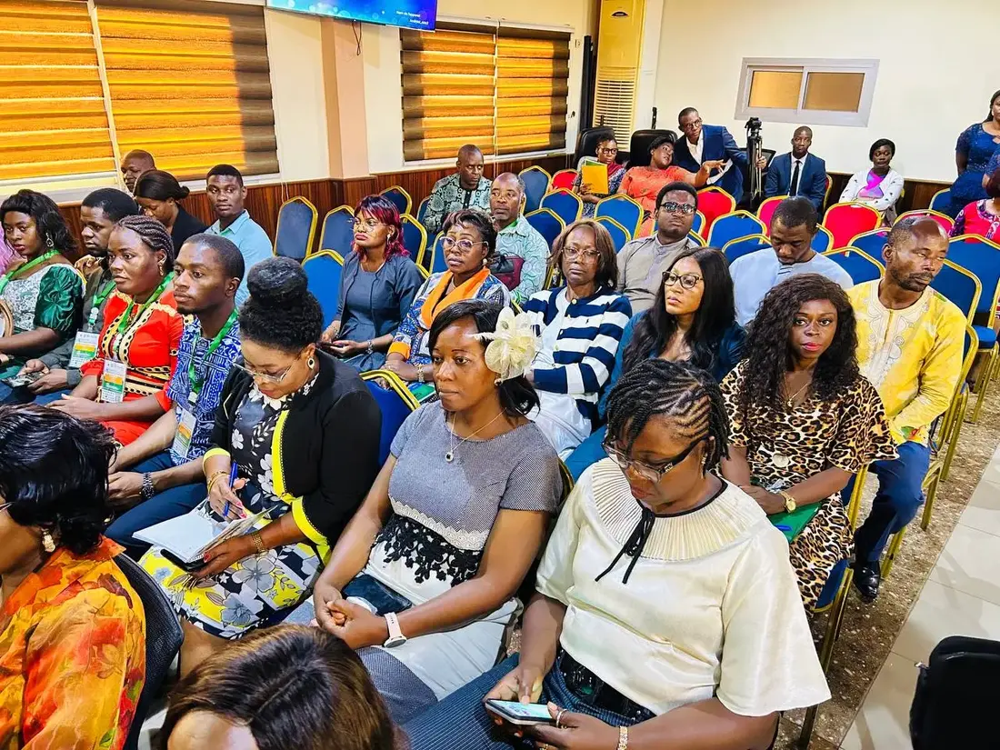
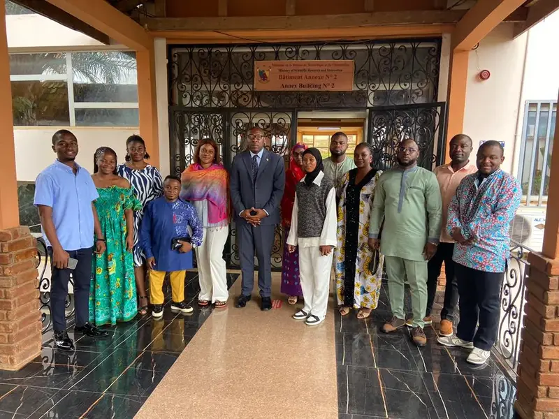
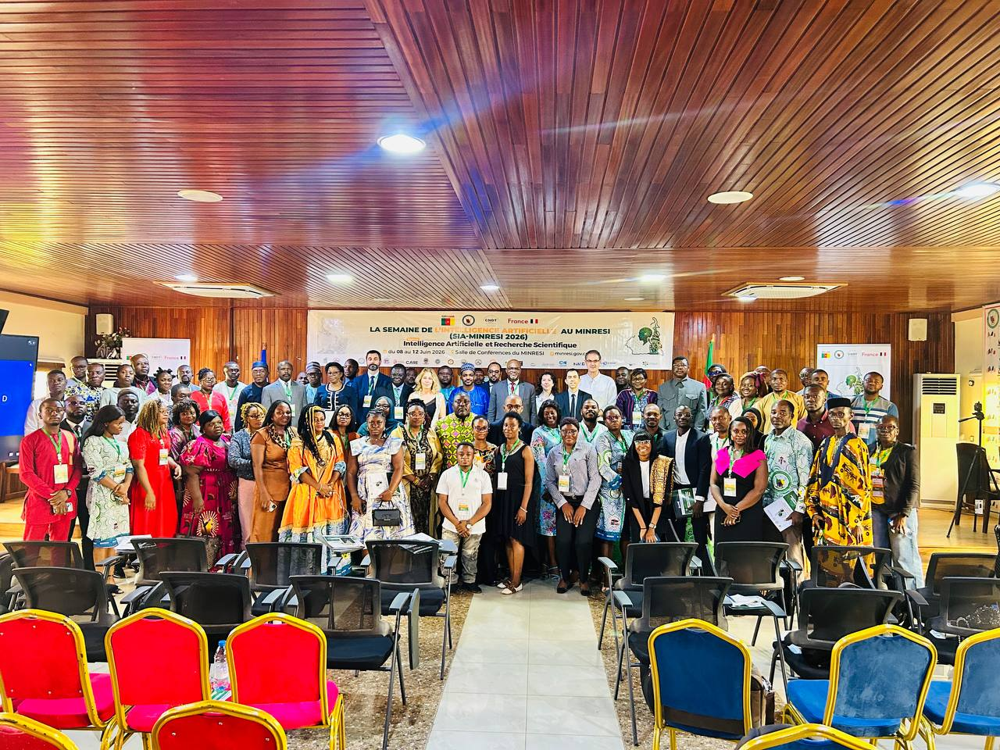
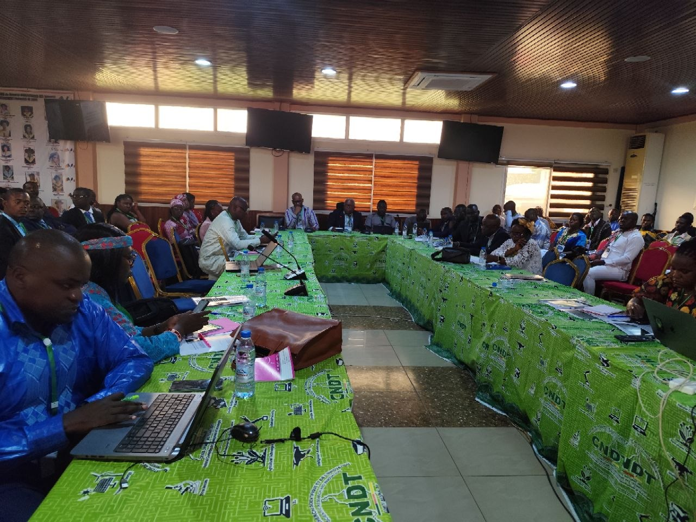
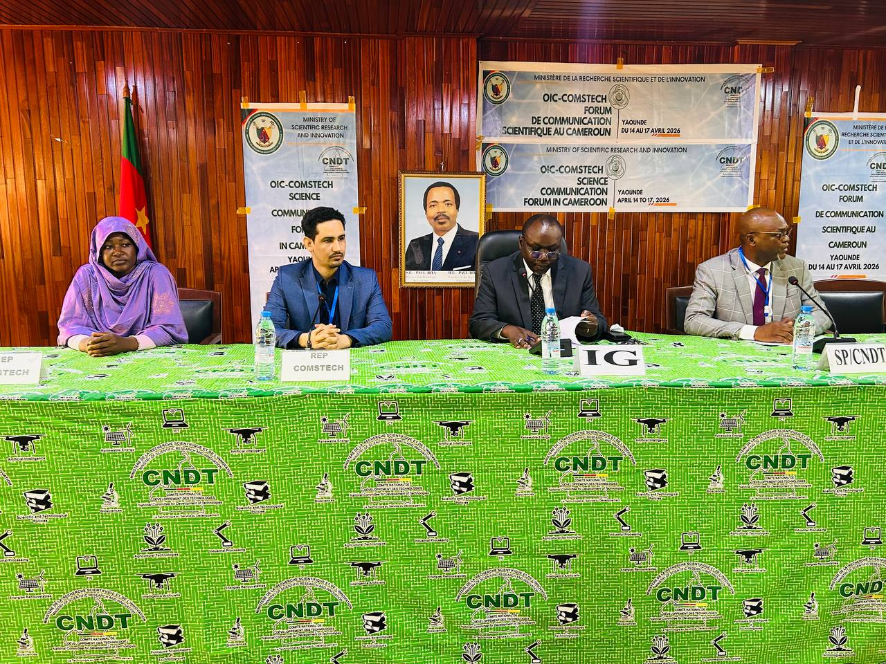
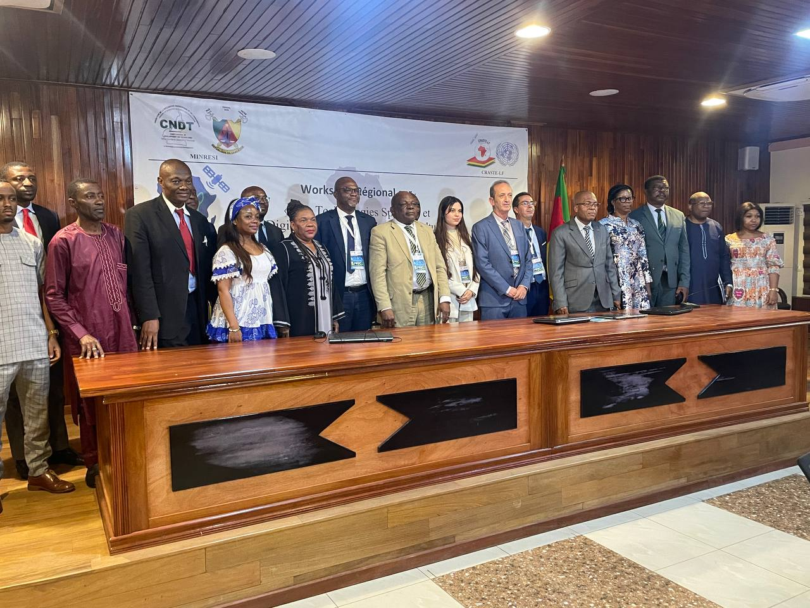
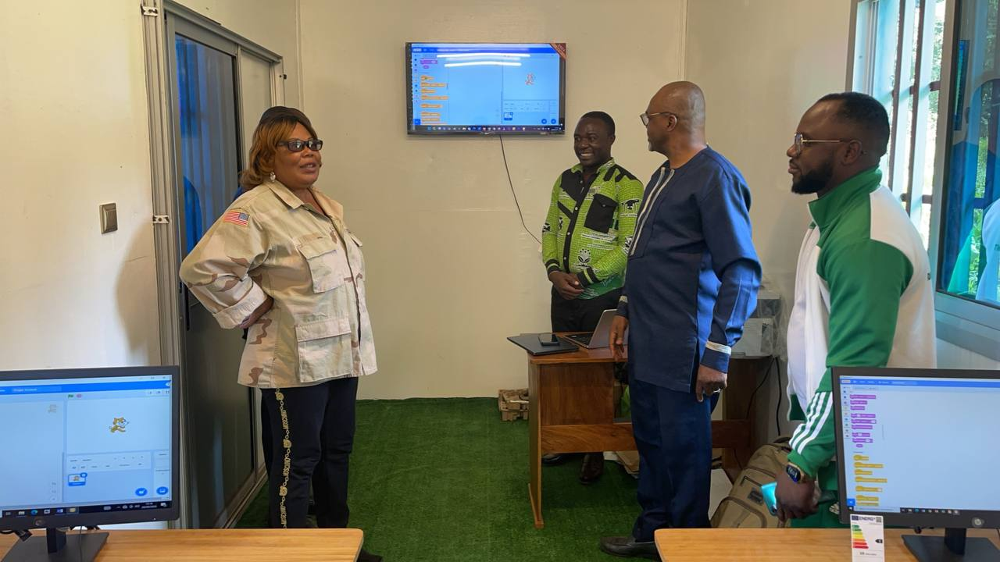

Information institutionnelle
Retrouvez les activités scientifiques, rencontres, projets et publications du CNDT.


Une réflexion scientifique consacrée aux infrastructures, aux données et aux compétences adaptées au contexte camerounais.
Lire l’actualité



